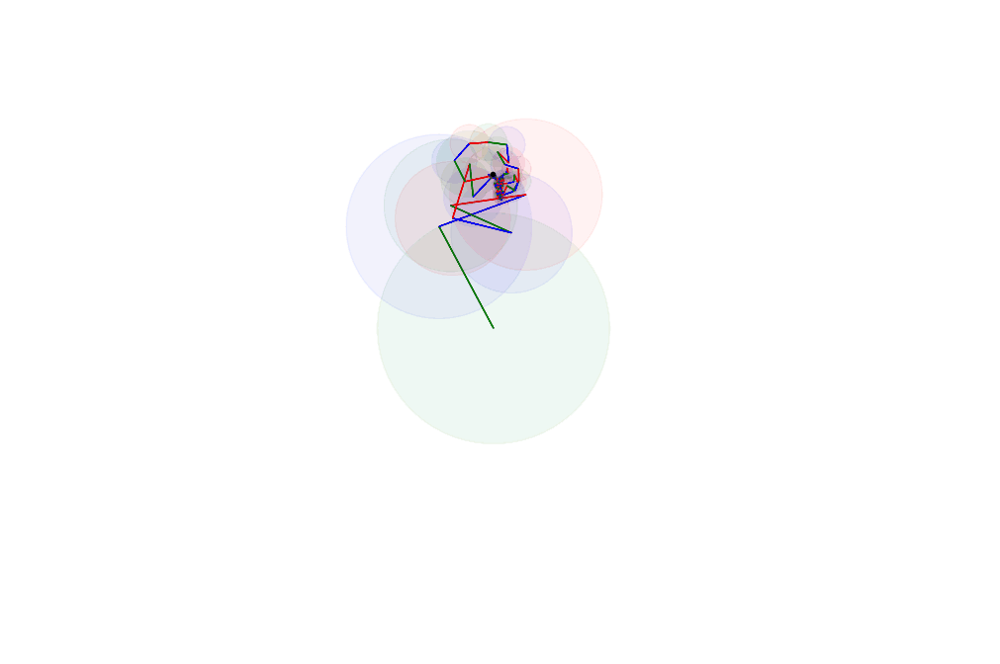

1. Introduction¶
Objectif et public cible¶
Tout d’abord, quelques termes importants :
- Software-Defined Radio (SDR):
- Une radio qui utilise un logiciel pour effectuer des tâches de traitement du signal qui étaient traditionnellement effectuées par le matériel
- Digital Signal Processing (DSP):
- Le traitement numérique des signaux, dans notre cas les signaux RF
Ce manuel agit comme une introduction pratique aux domaines des communications DSP, SDR et sans fil. Il est destiné à une personne :
- Intéressé à * utiliser * les SDR pour faire des trucs sympas
- Bon avec Python
- Relativement nouveau au DSP, aux communications sans fil et au SDR
- Un apprenant visuel, préférant les animations aux équations
- Mieux comprendre les équations * après * avoir appris les concepts
- Vous cherchez des explications concises, pas un manuel de 1 000 pages
Un exemple est un étudiant en informatique intéressé par un travail impliquant des communications sans fil après l’obtention de son diplôme, bien qu’il puisse être utilisé par toute personne désireuse d’en savoir plus sur SDR qui a de l’expérience en programmation. En tant que tel, il couvre la théorie nécessaire pour comprendre les techniques DSP sans les mathématiques intenses qui sont généralement incluses dans les cours DSP. Au lieu de nous plonger dans des équations, une abondance d’images et d’animations sont utilisées pour aider à transmettre les concepts, comme l’animation de plan complexe de la série de Fourier ci-dessous. Je crois que les équations sont mieux comprises * après * avoir appris les concepts à travers des visuels et des exercices pratiques. L’utilisation intensive d’animations est la raison pour laquelle PySDR n’aura jamais de version papier vendue sur Amazon.
{kind=link}
Ce manuel est destiné à introduire les concepts rapidement et en douceur, permettant au lecteur d’effectuer le DSP et d’utiliser les SDR intelligemment. Il n’est pas censé être un manuel de référence pour tous les sujets DSP/SDR ; il existe déjà de nombreux manuels de qualité, tels que le manuel SDR de Analog Device’s and dspguide.com. Vous pouvez toujours utiliser Google pour rappeler les identités trigonométriques ou la limite de Shannon. Considérez ce manuel comme une porte d’entrée dans le monde du DSP et du SDR : il est plus léger et nécessite moins d’engagement en termes de temps et d’argent, par rapport aux cours et manuels plus traditionnels.
Pour couvrir la théorie fondamentale du DSP, un semestre entier de “Signaux et systèmes”, un cours typique en génie électrique, est condensé en quelques chapitres. Une fois les principes fondamentaux du DSP couverts, nous nous lançons dans les SDR, bien que les concepts de DSP et de communications sans fil continuent d’apparaître tout au long du manuel.
Des exemples de code sont fournis en Python. Ils utilisent NumPy, qui est la bibliothèque standard de Python pour les tableaux et les mathématiques de haut niveau. Les exemples s’appuient également sur Matplotlib, qui est une bibliothèque de traçage Python qui permet de visualiser facilement des signaux, des tableaux et des nombres complexes. Notez que bien que Python soit “plus lent” que C++ en général, la plupart des fonctions mathématiques de Python/NumPy sont implémentées en C/C++ et fortement optimisées. De même, l’API SDR que nous utilisons est simplement un ensemble de liaisons Python pour les fonctions/classes C/C++. Ceux qui ont peu d’expérience Python mais une base solide dans MATLAB, Ruby ou Perl iront probablement bien après s’être familiarisés avec la syntaxe de Python.
Contribuant¶
Si vous parcourez n’importe quelle quantité de ce manuel et que vous m’envoyez un e-mail à pysdr@vt.edu avec des questions/commentaires/suggestions, alors félicitations, vous aurez contribué à ce manuel !
Mais à plus grande échelle, vous pouvez contribuer à ce manuel de la même manière que n’importe quel projet de logiciel open source - via Git. Ce manuel peut être sous la forme d’un site Web, mais le matériel source qu’il est généré à partir de toutes les vies sur la page GitHub du manuel <https://github.com/777arc/textbook>`_. N’hésitez pas à soumettre un problème ou même une demande d’extraction (PR) avec des correctifs ou des améliorations. Ceux qui soumettent des commentaires/correctifs précieux seront ajoutés de manière permanente à la section des remerciements ci-dessous. Pas bon à Git mais avez-vous des changements à suggérer ? N’hésitez pas à m’envoyer un e-mail à pysdr@vt.edu.
Le site Web sur lequel ce manuel est hébergé est sans publicité, car nous détestons tous les publicités. Je ne fournis pas non plus d’adresse PayPal ou Bitcoin où j’accepte les dons. Il n’y a littéralement aucun moyen pour moi d’être payé pour ce manuel. Au lieu de cela, je suggère simplement de partager ce manuel avec des collègues, des étudiants et d’autres apprenants tout au long de la vie qui pourraient être intéressés par le matériel.
Remerciements¶
Merci à tous ceux qui ont lu une partie de ce manuel et fourni des commentaires, et en particulier à:
- Barry Duggan
- Matthew Hannon
- James Hayek
- Deidre Stuffer